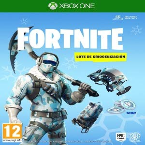

FIFA 19 es un videojuego arcade de fútbol desarrollado por EA Vancouver y EA Rumania, como parte de la serie FIFA de Electronic -Arts.
Una de las innovaciones más emocionantes y útiles en la mecánica de juego de FIFA 19 son las definiciones precisas, un sistema totalmente nuevo que te permite convertir todos tus tiros en disparos de primera con solo un toquecito de botón bien sincronizado. Como su nombre indica, escoger el momento preciso es vital para esta característica que añade un nivel nuevo de riesgo/recompensa a FIFA 19.
$139.900(Internet)
$200.000(Normal)
CALL OF DUTY:
Call of Duty es un videojuego de disparos en primera persona de tipo bélico desarrollado por Infinity Ward. El videojuego es el primer título de la franquicia en ser lanzado para las videoconsolas de séptima generación Call of Duty vuelve a sus raíces con Call of Duty : WWII, una experiencia increíble que redefine la Segunda Guerra Mundial para la nueva generación de juegos. El Desembarco de Normandia en el Día D y la lucha por todo Europa a través de icónicas localizaciones en la mayor guerra de la historia. La experiencia del combate clásico de Call of Duty, los vínculos entre soldados, y una imperdonable naturaleza de guerra en contra de un poder global lanzando el mundo hacía la tiranía
$219.900(Internet)
$359.900(Normal)
GEARS OF WAR 4:
Gears of War es un videojuego de disparos en tercera persona, del género acción-aventura y estrategia, desarrollado por Epic Games utilizando el motor de videojuego Unreal Engine 3.Se trata de la secuela de la reconocida serie de juegos de disparos en tercera persona, esta vez para Xbox One que progresará en la jugabilidad de la serie manteniendo el componente emocional de la historia y que sacará provecho de el ya popular modo multijugador. El juego nos volverá a traer las historia de la guerra infinita contra los enemigos que amenazan a la humanidad y la lucha por salvar a los pocos supervivientes de el conflicto iniciado el terrible día D y que cambió el rumbo de la historia de la humanidad.
$219.900(Internet)
$249.900(Normal)
FORTNITE:
Fortnite Battle Royale es un videojuego gratuito perteneciente al género de Battle Royale desarrollado y publicado por Epic Games. Fue lanzado como un título con acceso anticipado para Microsoft Windows, macOS, PlayStation 4, Xbox One el 26 de septiembre de 2017, para iOS el 2 de abril de 2018, y para Android el 9 de agosto.Fortnite se ha convertido en todo un fenómeno mundial ya que cuenta con millones de descargas desde su estreno y ha alcanzado los 3,4 millones de jugadores simultáneos, los cuales aumentaron tras la llegada del modo Battle Royale.
La clave de su éxito reside en el dinamismo, la sencillez y la intensidad. Y es que, a diferencia de otros juegos rivales como PlayerUnknown’s Battlegrounds, sus partidas son más rápidas e intentas. Además, los enfrentamientos suelen ser más continuos y habituales.
$299.900(Internet)
$399.900(Normal)

DIRT RALLY:
Dirt Rally (escrito como DiRT Rally) es un videojuego de carreras desarrollado y publicado por Codemasters para Windows de Microsoft. Una versión de acceso anticipado del juego se liberó el 27 de abril de 2015, a través del servicio de distribución digital Steam. La versión final del juego se publicó el 7 de diciembre de 2015. El juego se publicó para las consolas de octava generación PlayStation 4 y Xbox One el 5 de abril de 2016. Está anunciada la versión para Linux/SteamOS.Dirt Rally es un videojuego de carreras centrado en el rally. Los jugadores compiten en acontecimientos de etapa cronometrada en asfalto y off-road en condiciones de tiempo variable. En su publicación, el juego pesentaba 17 coches, 36 etapas de tres ubicaciones mundiales reales (Baumholder, Powys y Argolis), y multiplayer asíncrono.2 Rallycross y jugador versus jugador multiplayer son los modos de juegos planeados. Codemasters anunció una licencia con la Campeonato Mundial de Rallycross FIA en julio de 2015.
$219.900(Internet)
$239.900(Normal)
MORTAL KOMBAT XL:
Mortal Kombat es un videojuego de lucha, con un plano bidimensional y gráficos tridimensionales. Es la novena entrega de la serie de Mortal Kombat, fue desarrollado por NetherRealm Studios (antes conocida como Midway Games) y publicado exclusivamente bajo la licencia de Warner Bros. Interactive Entertainment en el año 2011.New Line Cinema está preparando una nueva película de ‘Mortal Kombat’, pero la descripción de los personajes no concuerda con la saga de videojuegos. El principal protagonista será Cole Turner, que nunca hemos podido verlo en ningún juego. Él y su familia serán muy importantes para la trama. Además Raiden será adolescente, pero parece que han respetado a otros como Sonya, Mileena, Jax, etc… Aunque lo más llamativo es que Goro, Sub-Zero y Scorpion no aparecen por ningún lado. Quizás se los dejan para la secuela.
$159.900(Internet)
$199.900(Normal)
GRAND THEFT AUTO FIVE:
Grand Theft Auto V (abreviado como GTA V o GTA5) es un videojuego de acción-aventura de mundo abierto desarrollado por la compañía británica Rockstar North y distribuido por Rockstar Games. Fue lanzado el 17 de septiembre de 2013 para las consolas PlayStation 3 y Xbox 360. Posteriormente, fue lanzado el 18 de noviembre de 2014 para las consolas de nueva generación PlayStation 4 y Xbox One con mejores gráficos y novedades interesantes como la vista en primera persona y finalmente para Microsoft Windows el 14 de abril de 2015.GTA 5 es la quinta entrega de la exitosa saga de videojuegos sandbox desarrollada por Rockstar Games, Grand Theft Auto. Con millones de ventas a sus espaldas y uno de los mundos abiertos más ricos hasta la fecha, Grand Theft Auto V transporta al jugador a Los Santos, una extensa y soleada metrópolis en declive que lucha por mantenerse a flote en una era de incertidumbre económica y realities baratos que referencia de una forma paródica a la Los Ángeles de nuestro tiempo.
$299.900(Internet)
$399.900(Normal)
RED READ REDEMPTION II:
Red Dead Redemption 2 es un videojuego de acción-aventura western, en un mundo abierto y en perspectiva de primera y tercera persona, con componentes para un jugador y multijugador. Fue desarrollado por Rockstar Studios, para las consolas PlayStation 4 y Xbox One. Es la precuela de Red Dead Redemption y el tercer juego de la saga Red Dead. Su fecha de lanzamiento fue el 26 de octubre de 2018.En una llanura, aparentemente sin rumbo fijo, veo un hombre a caballo. Sería de lo más normal en un juego sobre el Salvaje Oeste de no ser porque está muerto y tiene varias flechas clavadas en su espalda. No he vivido ese conflicto, no sé de dónde narices ha salido, pero en algún punto ha muerto y ahora el caballo ha seguido su camino con un cadáver agujereado sobre su lomo. Decenas de horas después, aún hay cosas capaces de sorprenderme en Red Dead Redemption 2.
$245.990(Internet)
$299.990(Normal)
PES 2019:
‘The Power Of Football’ es el mensaje clave que alimenta las nuevas características que llegan a PES 2019, que en parte son gracias al compromiso de lanzarlo exclusivamente en la generación actual de hardware. Esto permite a PES recrear el deporte real del fútbol como nunca antes, compatible con 4K HDR en todas las plataformas ofreciendo imágenes foto realistas y movimiento de los jugadores como en la vida real. El verdadero poder de PES se ve en su gameplay, que se centra en el impacto de la individualidad de cada jugador a través de estadísticas y movimientos. Jugar a PES 2019 te dará la destreza final de Luis Suárez, la habilidad única de regatear de Philippe Coutinho y los pases precisos de la icónica leyenda David Beckham.
Fuera del campo, licencias y modos de juego tendrán grandes cambios, incluyendo menús dentro del juego que dan vida a nuevas ligas añadidas de todo el mundo. Estas nuevas incorporaciones se encuentran en profundidad en los modos Liga Master y el nuevamente rediseñado myClub, que darán a los seguidores una experiencia más profunda más allá del galardonado gameplay. Con la incorporación de nuevas leyendas a la alineación dentro del juego, una edición dedicada a David Beckham y su lanzamiento en agosto en todo el mundo, los seguidores de PES pueden experimentar el Power of Football antes que nunca.
$154.990(Internet)
$429.990(Normal)
CRASH BANDICOOT:
rash Bandicoot es una serie de videojuegos de plataformas, originalmente exclusiva de PlayStation, publicada por Sony Computer Entertainment y creada por la compañía de videojuegos estadounidense Naughty Dog. La serie fue creada por Andy Gavin y Jason Rubin durante su permanencia en Naughty Dog, siendo un personaje principal concebido para ser mascota y representante de la marca PlayStation.uega al famoso nivel Stormy Ascent del juego original Crash Bandicoot™. Este nivel, que no llegó a terminarse y nunca había estado disponible anteriormente, pondrá a prueba hasta a los fans más curtidos de Crash. ¿Te atreves a enfrentarte a los escalones que se retraen rápidamente, los ayudantes de laboratorio que arrojan recipientes, los pájaros voladores, las plataformas móviles y las púas de hierro? ¡Descárgate y juega al nivel Stormy Ascent!
$299.990(Internet)
$359.990(Normal)
DRAGON BALL 2 XENOVERSE:
Dragon Ball Xenoverse 2 es un videojuego desarrollado por Dimps y publicado por Bandai Namco Entertainment basado en la franquicia de Dragon Ball. Es la secuela de Dragon Ball Xenoverse, y se publicó en otoño de 2016 para PlayStation 4, Xbox One, Microsoft Windows y Nintendo Switch.4 En Japón, Dragon Ball Xenoverse 2 fue lanzado sólo en PlayStation 4.6 Es el segundo videojuego de Dragon Ball de la octava generación de consolas de videojuego.Dragon Ball Xenoverse 2 para PS4 es la secuela directa del primer Xenoverse, y nos plantea el mismo reto: encarnar a un patrullero temporal y evitar que el universo Dragon Ball cambie su historia. Además, en esta segunda parte contamos con más opciones de personalización que nunca, nuevos personajes de la serie y de los OVAs, y diferentes posibilidades dependiendo de la raza de nuestro guerrero. También se han mejorado mucho los gráficos.
$149.990(Internet)
$200.000(Normal)
HALO 5 GUARDIANS:
Halo 5 Guardians es un videojuego de disparos en primera persona de la popular saga de videojuegos Halo exclusivo para la consola Xbox One, el cual salió el 27 de octubre de 2015 desarrollado por 343 Industries y publicado por Microsoft Studios. El juego sigue la línea argumental de Halo 4.Halo 5: Guardians ofrece experiencias multijugador épicas que incluyen diferentes modos, herramientas completas de construcción de niveles y la historia más dramática de Halo hasta la fecha. ¡Con la publicación múltiple de 10 contenidos gratuitos desde el lanzamiento del juego, Halo 5: Guardians ofrece más contenido, más locura multijugador y más variedad que cualquier Halo!
$299.990(Internet)
$399.990(Normal)
MAD MAX:
Mad Max es una película australiana de acción-ciencia ficción de 1979 escrita y dirigida por George Miller y protagonizada por Mel Gibson.El arco dramático del personaje Mad Max, desarrollado en tres películas entre 1979 y 1986, es bien particular. En la primera, es un policía en un futuro cercano que asume el rol de justiciero revanchista. Se trata de un ejercicio barato y brutal, con una crueldad incómoda pero efectiva. En la segunda, el futuro es más desolado pero también más lírico: el petróleo escasea y este expolicía le ayuda a una comunidad formada alrededor de una refinería a defenderse de unos maleantes.
$199.990(Internet)
$299.990(Normal)
MINECRAFT:
Minecraft es un videojuego de construcción, de tipo «mundo abierto» o sandbox creado originalmente por el sueco Markus Persson (conocido comúnmente como "Notch"),10 y posteriormente desarrollado por su empresa, Mojang AB. Fue lanzado públicamente el 17 de mayo de 2009, después de diversos cambios fue lanzada su versión completa el 18 de noviembre de 2011.Minecraft es un juego de mundo abierto, por lo que no posee un objetivo específico, permitiéndole al jugador una gran libertad en cuanto a la elección de su forma de jugar. A pesar de ello, el juego posee un sistema de logros.1213 El modo de juego predeterminado es en primera persona, aunque los jugadores tienen la posibilidad de cambiarlo a tercera persona.14 El juego se centra en la colocación y destrucción de bloques, siendo que este se compone de objetos tridimensionales cúbicos, colocados sobre un patrón de rejilla fija. Estos cubos o bloques representan principalmente distintos elementos de la naturaleza, como tierra, piedra, minerales, troncos, entre otros.15 Los jugadores son libres de desplazarse por su entorno y modificarlo mediante la creación, recolección y transporte de los bloques que componen al juego, los cuales solo pueden ser colocados respetando la rejilla fija del juego.
$379.990(Internet)
$459.990(Normal)
FARCRY 5:
Far Cry 5 es un videojuego de acción-aventura en primera persona desarrollado por Ubisoft Montreal y publicado por Ubisoft para PlayStation 4, Xbox One y Microsoft Windows. Es la undécima entrega de la serie Far Cry. Su lanzamiento se produjo el 27 de marzo de 2018.1Al igual que los anteriores juegos de la serie, Far Cry 5 es un juego de acción y aventura en primera persona ambientado en un entorno de mundo abierto en el que los jugadores pueden explorar libremente. El juego cuenta con un nuevo sistema para la creación de personajes, en el que los jugadores pueden personalizar las apariencias del mismo, el género y el tono de la piel.34 Los jugadores tienen acceso a una gran variedad de armas y dispositivos para luchar contra sus enemigos. El juego pone un énfasis renovado en el combate cercano en comparación con los títulos anteriores de Far Cry, introduciendo una gama más amplia de armas blancas.
A medida que el juego se establece en un mundo abierto, los jugadores pueden recorrer el mundo a pie o a través de varios vehículos. Además, el juego cuenta con un sistema de reclutamiento, en el que los jugadores pueden reclutar ciudadanos locales para luchar junto a ellos, similar al sistema "Buddy" utilizado en Far Cry . Los jugadores también pueden domar a los animales salvajes, al igual que en Far Cry Primal. También se introduce una mecánica de pesca. La campaña se puede jugar individualmente o con un compañero a través del modo multijugador cooperativo del juego.7 También cuenta con un editor de mapas, al igual que en títulos anteriores.
Durante la partida se pueden contratar a distintas personas para que ayuden al jugador a realizar misiones. Estas personas reciben el nombre de "pistoleros a sueldo" y todos ellos cuentan con un trasfondo argumental que se puede descubrir a lo largo de la aventura.
$199.990(Internet)
$299.990(Normal)
MXGP 2:
MXGP2, juego oficial de motocross es la secuela del anterior título de Milestone y ofrece interesantes novedades, como el añadido de la personalización de pilotos y vehículos, eventos en interior y otras características por desvelar. El modo Carrera volverá a estar presente, junto con modos online y offline en los que los que competir por el título de campeón de motocross y acompañar a grandes nombres del panorama internacional, tales como Ryan Villopoto y Tony Cairoli, el ocho veces campeón del mundo.